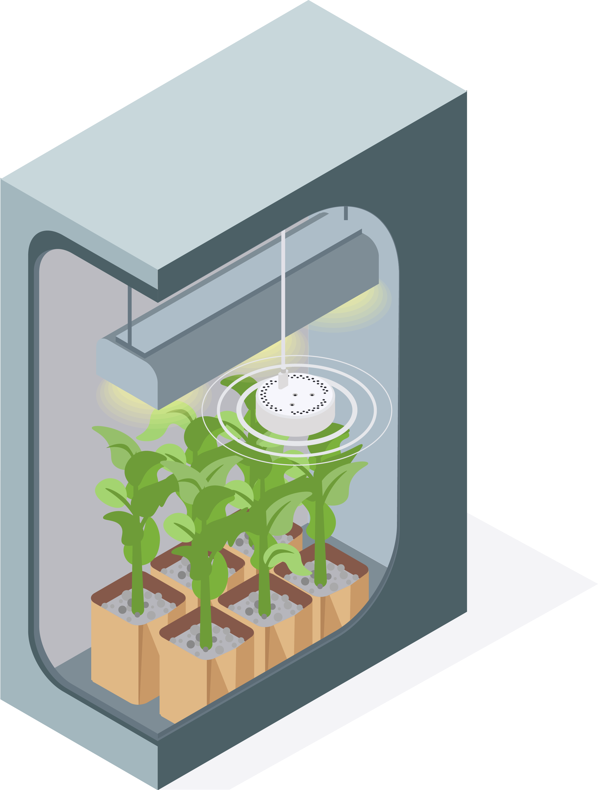

<!-- How many do i need? -->
<section class="section">
  <div class="container">
    <header class="section-header">
      <h2>How many sensors do I need?</h2>
      <p class="lead">Grow spaces have different microclimates. Typically we recommend 1-2 sensors per 25 square feet. The bigger your grow space, the more sensors you’ll need. Higher air flow means fewer sensors. Taller spaces or racks, on the other hand, means you need more sensors to have accurate data.</p>
    </header>

    <div class="row gap-y text-center">

      <div class="col-md-6 col-xl-4 feature-1">
        <p class="feature-icon"></p>
        <h5>Grow Tents/Hobby Growers</h5>
        <p class="text-muted">For small areas or tents up to a 4'x8', you should be using 1-3 sensors.</p>
      </div>

      <div class="col-md-6 col-xl-4 feature-1">
        <p class="feature-icon"></p>
        <h5>Grow Rooms</h5>
        <p class="text-muted">For medium sized grow rooms we typically recommend 1-2 sensors per 25 square feet.</p>
      </div>

      <div class="col-md-6 col-xl-4 feature-1">
        <p class="feature-icon"></p>
        <h5>Commercial Facility/Greenhouse</h5>
        <p class="text-muted">Every facility is unique and has different needs, contact us for a professional design.</p>
      </div>
    </div>
  </div>
</section>
<!-- /.How Many Do I need? -->
